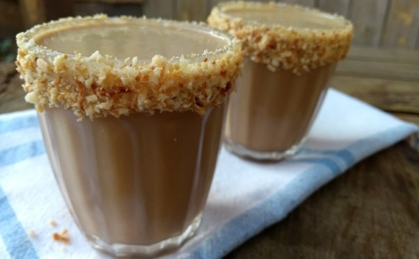

Coffeeshop
-

-

- 
Café Expresso Tradicional
Um café expresso (do italiano caffè espresso), frequentemente referido simplesmente como expresso (ou internacionalmente espresso), é um método de preparar café através da passagem de água quente, não fervente, sob alta pressão pelo café moído.
Café Com Leite
É uma mistura que possui maior concentração de leite que deixa o café com um sabor mais agradável.
Café Americano
O café americano é uma variação do café espresso que utilizada uma quantidade maior de água.
Na verdade prepara-se o espresso tradicional e o mesmo é diluído em água, como resultado obtém-se uma bebida menos concentrada.
Por isso, é indicado para pessoas que preferem um café menos intenso e, ao mesmo tempo, saboroso.
Café Gelado
O café gelado é uma bebida preparada à base de café, misturado com alimento congelado.
Este tipo de bebida é mais adequado nos meses de verão, mas também pode ser apreciada nos dias mais frios do inverno.
Macchiato
É uma bebida de café expresso com uma pequena quantidade de leite, geralmente espumada.
Em italiano, macchiato significa "manchado" ou "marcado", então a tradução literal de caffè macchiato é "café manchado" ou "café marcado".
Cappuccino
Um cappuccino clássico, muito famoso no Brasil e consiste em um terço de café expresso, um terço de leite vaporizado e um terço de espuma de leite vaporizado.
Café Cubano
O café cubano possui um sabor suave e levemente doce.
Envolvido em uma aura de tradição e com um sabor leve e de baixa intensidade.
Café Havaiano
Se você também é um apaixonado por cafés diferentes, precisa experimentar esta versão de café com leite de coco e coco queimado para aquecer o corpo nas noites frias de inverno ou para refrescar nos dias quentes no verão, é só mudar a temperatura do leite.
Mocaccino
É feito com café espresso sobre base de molho de chocolate e grande camada de leite quente emulsionado
Café Irlandês
Famoso em diversos países ao redor do mundo, o Irish Coffee, ou café irlandês, é uma das bebidas mais tradicionais da Irlanda.
Foi inventada depois da Segunda Guerra Mundial e é um café para os fortes. A receita leva, além do café, um shot de uísque e creme de leite fresco batido.